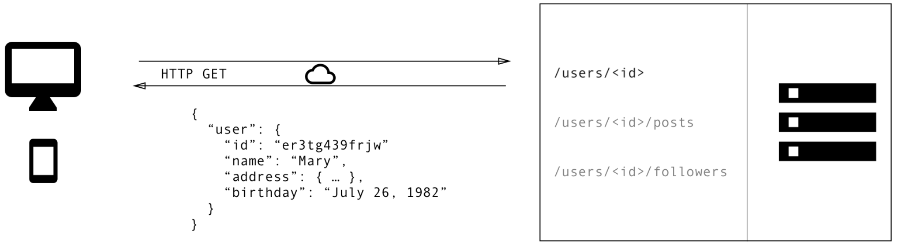

The Battle: REST vs GraphQL
by Razvan Timis
About the presentation
- What is REST?
- What is GraphQL?
- A blogging app: REST Vs GraphQL
- Who’s using GraphQL?
- Coding on blogging app
What is REST
- REpresentational State Transfer is a software architectural style
- A REST API consists of an assembly of interlinked resources
- The clients and servers exchange information by using a standardized interface and http protocol.
- Every interaction with the server must be stateless
What is GraphQL
- A query language and server-side runtime for your API
- GraphQL is designed to make APIs fast, flexible, and developer-friendly
- Developed by Facebook in 2012
A blogging app: REST vs GraphQL
-
A blogging application that need to display for a specific user:
- full name of the user
- the titles of the posts of that user
- the names of the last 3 followers of that user
- Let see the differente between REST and GraphQL
A blogging app: REST vs GraphQL
For each endpoint, the client app will do a REST request
A blogging app: REST vs GraphQL

A blogging app: REST vs GraphQL
Let see how the GraphQL schema look
type Query {
User(id: String): User
}
type User {
name: String
age: Int
posts: [Post]
followers(last: Int):[Follower]
}
type Post {
title: String
content: String
}
type Follower {
name: String
age: Int
}
REST Vs GraphQL
- No more over fetching extra data.
REST Vs GraphQL
- No more under fetching data.
REST Vs GraphQL
- API changes and evolution
type User {
name: String @deprecated(reason: "Use `fullName`")
fullName: String
age: Int
posts: [Post]
followers(last: Int):[Follower]
}
A directive can be attached to a field or fragment inclusion, and can affect execution of the query in any way the server desires. more...
REST Vs GraphQL
- Single endpoint
REST Vs GraphQL
- Insightful Analytics: low-level performance monitoring and monitoring the use of each field
REST Vs GraphQL
- Auto documentation
Who’s using GraphQL


For more... click here